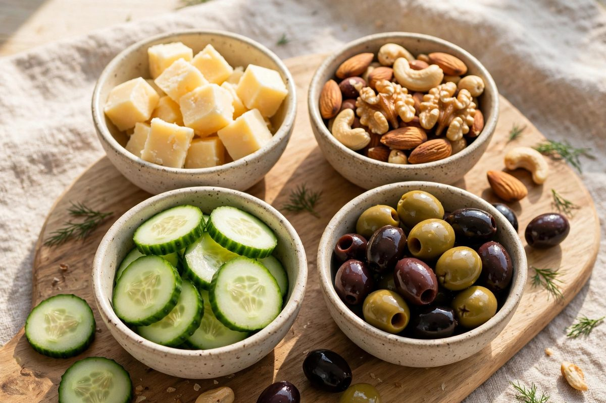

Home › Guides
Low-Carb Snacks: What to Eat Between Meals

Snacks are where low-carb diets often go wrong. A biscuit here, a handful of crisps there, and the daily carb count doubles before lunch. The fix is not willpower but preparation. Keep low-carb snacks ready, know the portions, and snacking becomes easy. This guide covers the snacks that work, the ones that do not, and how to snack without undoing your progress.
The best low-carb snacks
Hard-boiled eggs are the perfect snack: portable, filling, and almost carb-free. Cheese is another good choice, about 30 grams of cheddar has 1 gram of net carbs. Nuts are nutritious but calorie-dense, so measure a small handful, about 30 grams, rather than eating from the bag.
Vegetables with dip are a fresh option: cucumber, celery, and pepper sticks with guacamole or a cream cheese dip. Olives are low in carbs and satisfying. A small pot of Greek yoghurt with berries is a sweet option that stays low in carbs.
Portions matter
Low-carb does not mean unlimited. Nuts, cheese, and cream are all low in carbs but high in calories, and it is easy to eat hundreds of calories without noticing. Measure snacks for a week to learn what a portion looks like, and use small bowls rather than eating from the packet.
A good snack is about 100 to 200 calories and keeps you full for two to three hours. If you are still hungry after a snack, drink a glass of water and wait ten minutes, because thirst is often mistaken for hunger.
Snacks to avoid
Avoid crisps, crackers, biscuits, and granola bars, which are all high in carbs and low in nutrition. Dried fruit is deceptively high in sugar: a small box of raisins has about 25 grams of carbs. Fruit juice and smoothies are also high in sugar, even when they are labelled natural.
Be careful with low-carb snack bars and protein bars. Many contain sugar alcohols that can upset the stomach, and some have more carbs than the label suggests. Check the net carbs and the ingredient list before you buy.
Snacking at work and on the go
Keep a snack drawer at work with nuts, cheese, and hard-boiled eggs. Carry a small bag of nuts and a bottle of water when you travel. When you are hungry and there is no good option, a black coffee and a glass of water can carry you to the next meal.
Plan snacks like meals, not as an afterthought. If you know you get hungry at four o'clock, have a snack ready. A planned snack is a good snack; an unplanned snack is usually a biscuit.
Sweet snacks without sugar
A sweet snack does not need sugar. Berries with whipped cream are sweet, fresh, and low in carbs. A square of dark chocolate, with 70 percent cocoa or more, is rich and satisfying in a small amount. A handful of nuts with a few raspberries is sweet, crunchy, and filling.
Keep sweet snacks small and occasional, because even a low-carb sweet has calories. Eat them slowly, and enjoy them, rather than eating them quickly and wanting more. A small, good sweet snack is better than a large, unsatisfying one.
Frequently Asked Questions
What is the best low-carb snack?
Hard-boiled eggs, cheese, nuts, olives, and vegetables with dip are all good. Keep portions small: about 30 g of nuts or cheese.
Can I eat fruit as a snack?
Yes, in small amounts. Berries are the lowest-carb fruit. Avoid bananas, grapes and dried fruit, which are high in sugar.
Do I need to snack on a low-carb diet?
Not necessarily. Many people snack less on low-carb because protein and fat are filling. Snack only when you are genuinely hungry.